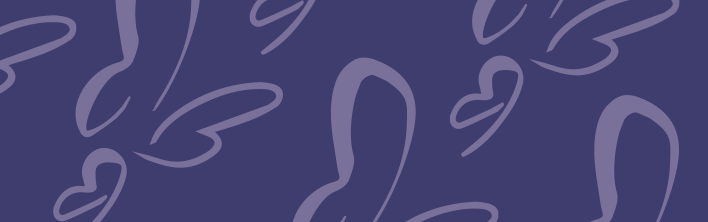
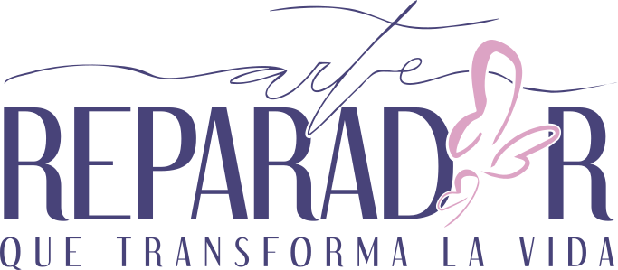
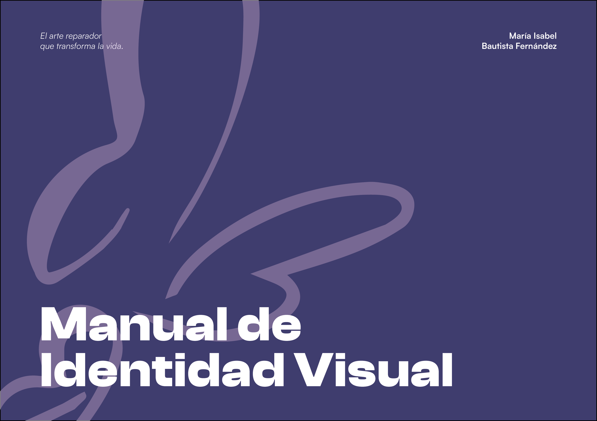
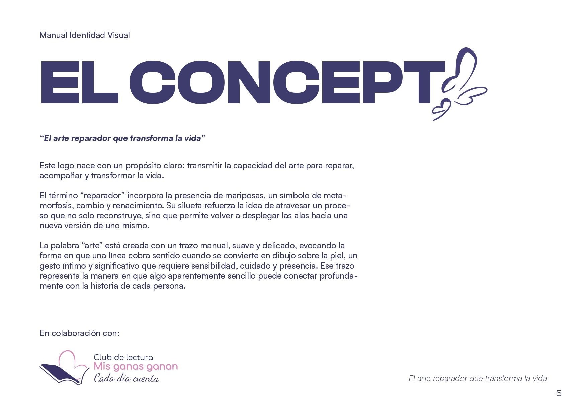
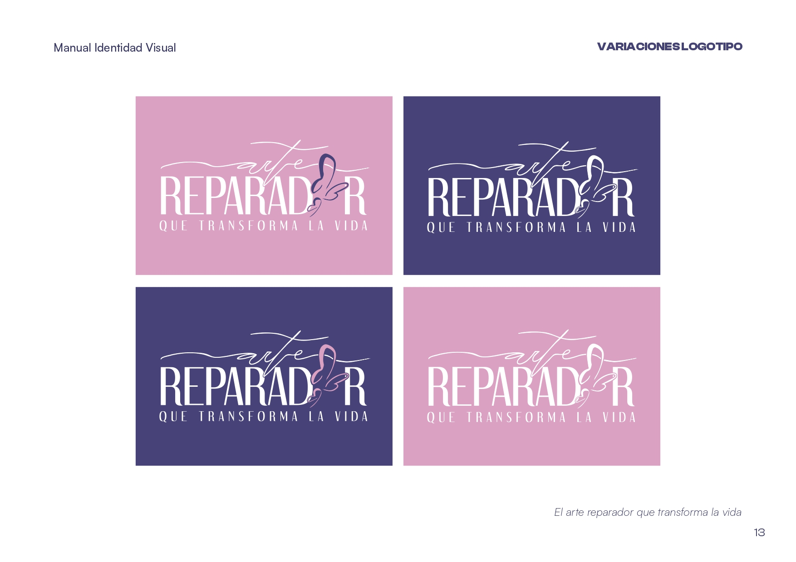
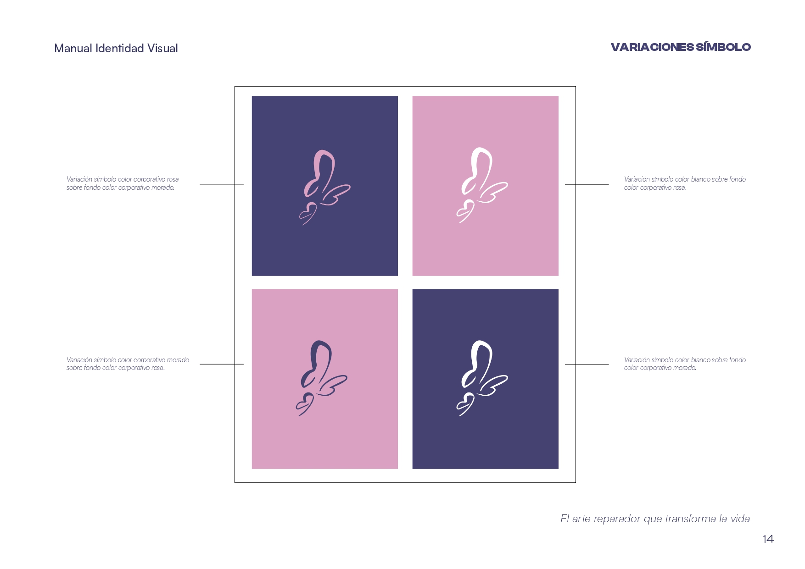
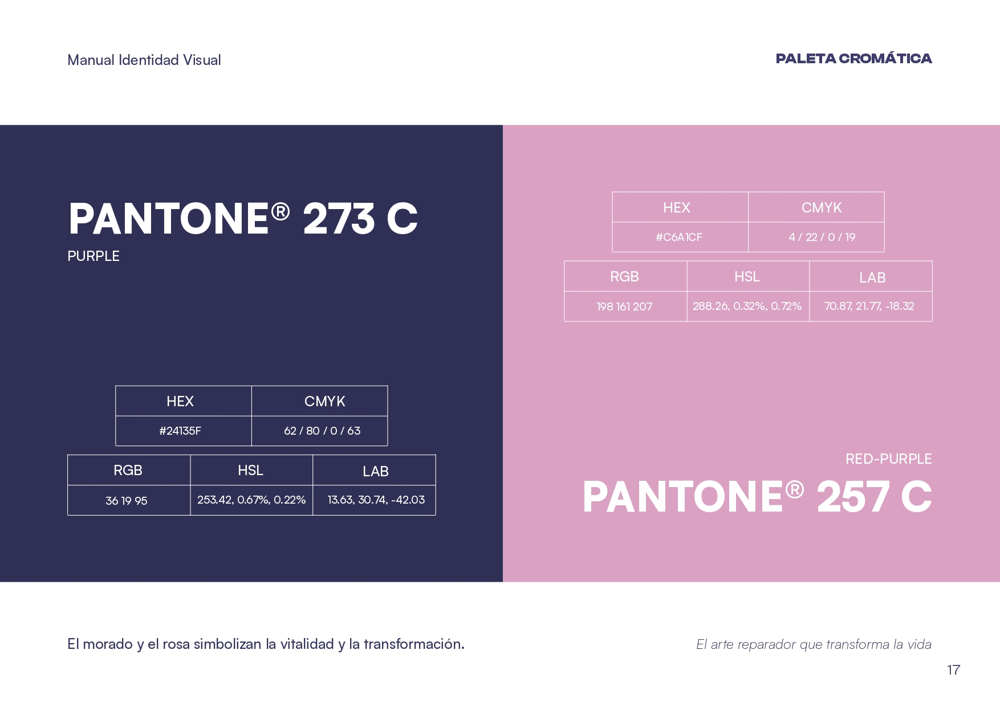
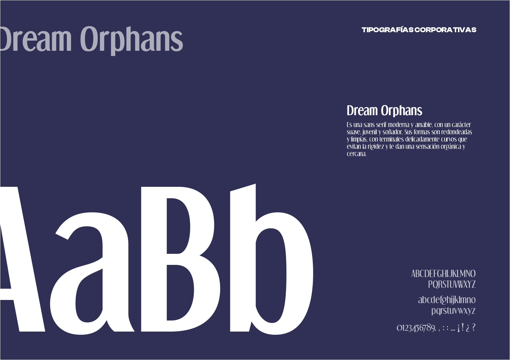

El arte reparador que
transforma la vida
Creación de logotipo para evento.
Manual de identidad + Propuestas de Packaging Evento.
Proyecto en el marco del Máster en Diseño Gráfico y Desarrollo Web UX/UI de la Cámara de Comercio de Sevilla para clientes reales: Manuel y Marta Madrigal y el club de lectura "Mis ganas ganan", alineando la estética a la del mismo.

#252451
#484379
#C6A1CF
#EADCF0
#FFFFFF
El reto estratégico consistió en conceptualizar la identidad del tatuaje reparador bajo el concepto de "arte" , omitiendo la palabra tabú dentro del entorno hospitalario mediante trazos delicados y mariposas que simbolizan la metamorfosis. Estructuré todo el sistema visual, paleta cromática y normativas técnicas del logotipo para su despliegue institucional. Gracias a su sensibilidad y rigor, la propuesta fue una de las seleccionadas para el evento en el Hospital Virgen del Rocío.





